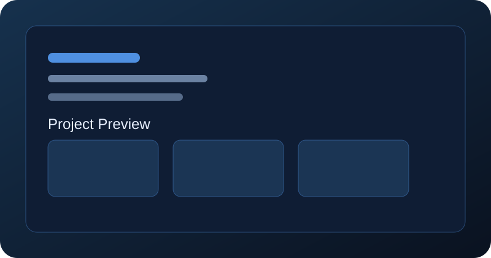

Professional Photo Placeholder
About Me
Computer Science graduate with 2+ years of IT Technical Support experience. I am interested in IT Support, Application Support, System Administration, and Java Backend Development.
I enjoy solving technical issues, supporting end users, monitoring systems, and contributing to reliable business operations through practical technology work.
IT Support
Application Support
System Support
Java Developer
Technical Skills
Core technologies and tools aligned to support, administration, and development work.
Operating Systems
- Windows
- Linux
Programming
- Java
- Python
- PHP
- HTML
- CSS
- JavaScript
Database
- MongoDB
- MySQL
Tools
- VMware vCenter
- Zabbix
- Dynatrace
- Remote Desktop
- Power BI
- Git
- GitHub
Work Experience
Timeline of technical support and operations responsibilities.
Pernec Integrated Network Systems
Current Company
- L1 CRM Support
- Linux troubleshooting
- VMware vCenter monitoring
- Zabbix monitoring
- Dynatrace monitoring
- System Integration Testing
- Disaster Recovery
UMW IT Services
Previous
- Security Awareness
- IT Policy Review
PROLINTAS
Internship
- Active Directory
- Technical Helpdesk
- Desktop Support
Projects
A featured project demonstrating practical backend and web application development.

Job Application Tracker
Status: Ongoing
A web application that helps users track job applications with login, CRUD operations, and application-status management.
Future Project Placeholder
Upcoming Work
Placeholder section for future portfolio projects, case studies, and application support related solutions.
Education
Bachelor of Computer Science
UiTM
Certificates
Certificate Placeholder
Future certification or training badge will appear here.
Certificate Placeholder
Future certification or training badge will appear here.